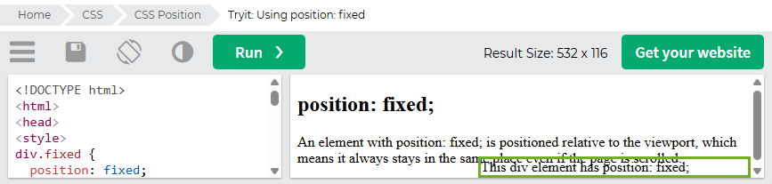

Positionings: Relative, Absolute and Fixed
Firstly, it's important to know that all elements on the web page are pixel blocks (imagine literal square-shapes) and they have a default positioning on them called 'static.' This means that each element that is placed on the web browser follows the natural flow of the elements depending on the conditions of the browser. Where it gets interesting is when the relative, absolute and fixed positions are selected.
(Source: w3schools.com on "CSS Layout - The position Property")
Relative Positioning
Elements with the relative positioning are moved (together with the top, left bottom, left and/or right properties) relative to its original position. For example, the div element shown above have been pushed to the right because it the left side of the element has been filled with 100 pixels:
(Source: w3schools.com on "CSS Layout - The position Property")
Absolute Positioning
Absolute positioned elements moves relative to the nearest positioned ancestor. Breaking down that sentence, let's say a square shaped container has been placed in the web, and within that container, a circle has been placed inside. The square share is the ancestor, and the circle is the descendant. In this scenario, the circle will move relative to its position within the square. If the element is not within an ancestor container, it treats the body of the webpage as its ancestor by default which can visually break from the natural flow of the web page. Working with the exisitng example from w3schools, we have filled the top part of the small box with 80 pixels, and its left side with 250 pixels. That's the key thing when using the top, left, bottom and right properties is that, it visually moves the elements opposite to what we've input. In the same example, we can see how it 'breaks' from the natural flow of elements because it has visually moved outside its ancestor container.
(Source: w3schools.com on "CSS Layout - The position Property")
Fixed Positioning
A fixed element is placed and, as its name suggests, permanently stays relative to the device's screen. With this positioning property, instead of the fixed element moving relative to the ancestor, it moves based on the visible screen. As seen in the second picture below, I have made the viewing screen smaller and you can see that part of the fixed element has overlapped with the other elements on the browser.
(Source: w3schools.com on "CSS Layout - The position Property")